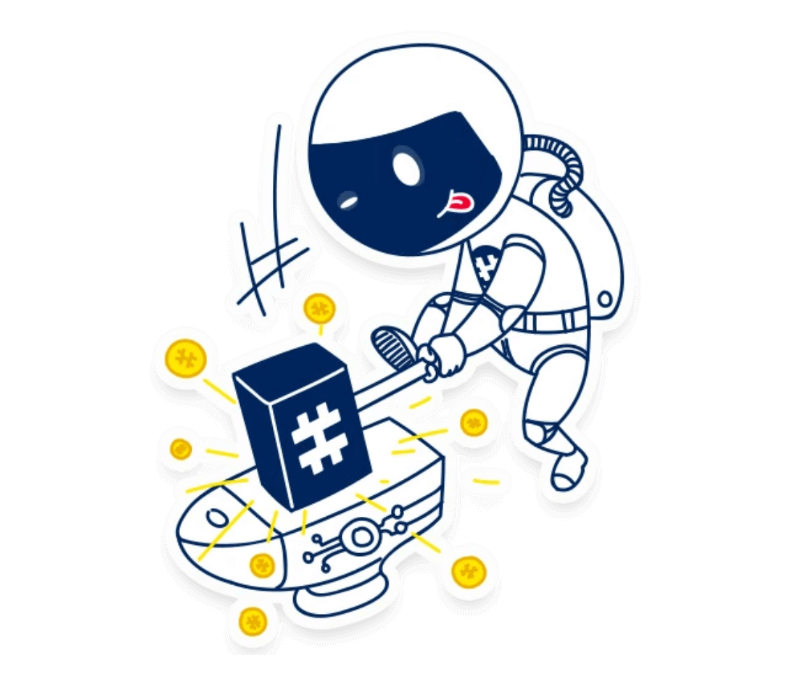

<div id="metawallet" class="rs-about style2 modify2 gray-color pt-120 pb-120 md-pt-80 md-pb-80">
    <div class="container">
       <div class="sec-title2 text-center mb-45">
           <span class="sub-text gold-color">Keep your coins safe!</span>
           <h2 class="title">
              Official #MetaWallet
           </h2>
           
           <div class="heading-line"></div>
           <div class="desc">
               When you got your bag of MHC, it is a good idea to transfer your coins from the crypto exchange to your personal MetaWallet. If you keep your coins on the exchange you might risk loosing them in case the exchange gets hacked.
           </div>
       </div>
   
       <div class="row">
           <div class="col-lg-6 md-mb-50">
               <div class="sec-title mb-30">
                   <div class="sub-text style4-bg">The MetaGate MetaWallet</div>
                   <h2 class="title pb-20">
                       Create a wallet and transfer MHC
                   </h2>
                   <div class="desc">
                       To create a wallet, you need to download the official <a href="https://www.metahash.org" target="_blank">MetaGate application</a>. Then follow the official documentation to start <a href="https://metahash.readme.io/docs/what-is-metawallet" target="_blank">creating a new wallet</a>.
                   </div>
                   <br />
                   <div class="desc">
                       Once you have your wallet, you can use your exchange to withdraw MHC to your new MetaWallet address. There is a small withdrawal fee that you'll have to pay depending on the exchange you are using.
                   </div>
                   <br />
                   <div class="desc">
                       Now that you have your coins on your own wallet, lets make these coins work for you and get you some rewards!
                   </div>
                   <br />
                   <div class="faq faq-warning">
                   <span>Make sure to backup your wallet <b>private key</b> and your <b>password</b>. You need both to restore a wallet! Without them you are at risk of losing your coins.</span>
   
                   </div>
               </div>
               
           </div>
           <div class="col-lg-6 pl-65 md-pl-15">
               <div class="about-img">
                   
               </div>
           </div>
       </div>
   </div>
</div>